twinstudio Twin Builder
What the Twin Builder is
The Twin Builder is the editor of twinstudio. It is where the content of a digital twin is filled in and changed. It shows one field per element and hides the complexity of the AAS metamodel behind forms, while still validating everything you enter against that metamodel.
Twin creation wizard
The wizard guides you through the creation of a digital twin. Open it with Create new Digital Twin on the dashboard or in the twin catalogue.
Choosing a basis
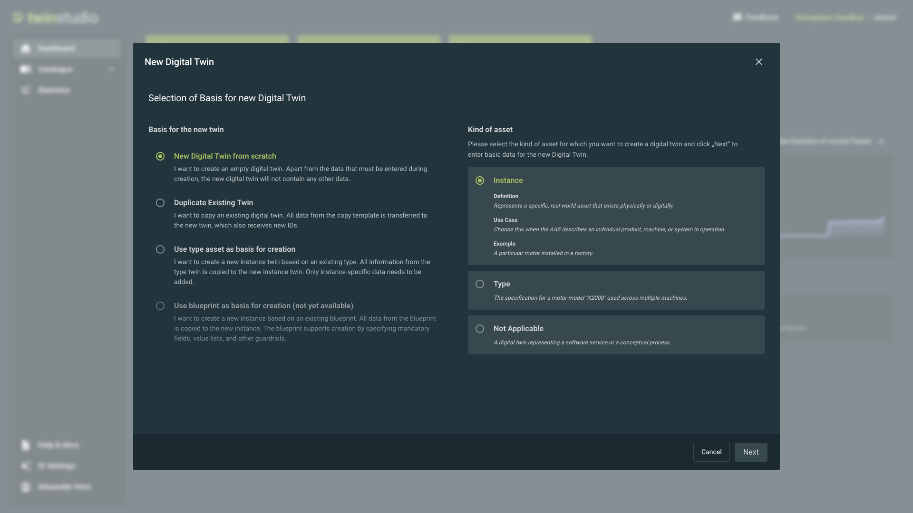
When you create a digital twin, you first decide which kind of asset the twin is for and what you want to base it on. Duplicating a twin or starting from a type carries its data over, so you only enter what differs.
| Basis | What it means | What information you must provide |
|---|---|---|
| New Digital Twin from scratch | An empty twin with nothing but the basic information. | Everything |
| Duplicate Existing Twin | A copy of an existing twin, with new identifiers. | Values you want to change |
| Use type asset as basis for creation | A new instance built from a type twin. | Instance-specific values |
| Use blueprint as basis for creation | Not available yet | - |
When you duplicate a twin, you search for the twin to copy. Enter at least 3 characters and press Enter. The search looks at the display name, the global asset ID, the idShort and the AAS ID. If the list reaches its maximum, twinstudio asks you to narrow the search.
By default, all submodels of the copied twin are copied as well. If you want to link a submodel instead, change that in the editor afterwards. Submodels of kind template are not copied. twinstudio tells you when the twin you selected contains such submodels.
The Kind of asset selection on the right explains the three options and gives a use case and an example for each, so you can pick the right one even if you have not met the term before:
- Instance describes one specific real asset that exists physically or digitally, for example a particular motor installed in a factory.
- Type describes a product model or component type that is used in many places, for example the specification for a motor model X2000.
- Not Applicable is for twins that do not represent a physical asset, such as a software service or a conceptual process.
For more on how type and instance twins relate, see the AAS guide on type and instance assets ⧉.
Step 1: Basic information
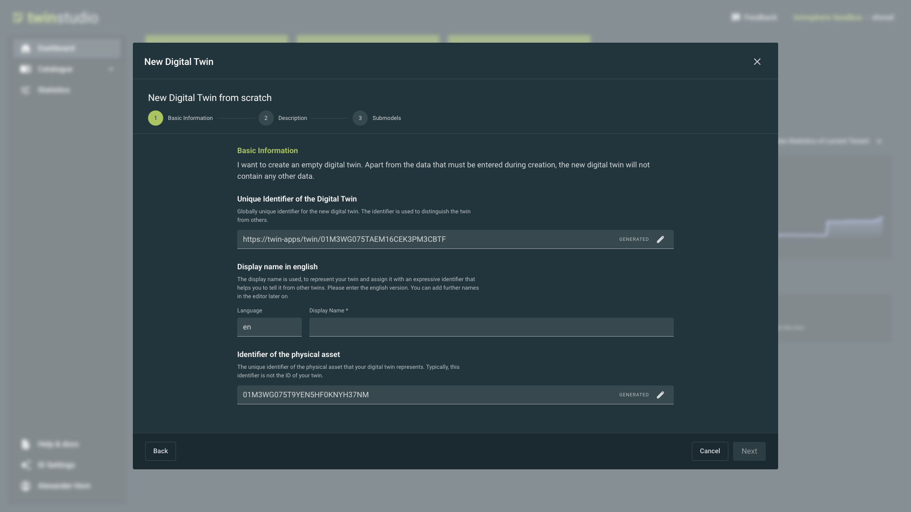
| Field | Notes |
|---|---|
| Identifier | The globally unique identifier of the twin. Generated when the ID generator is on |
| Display Name | Required. The name the twin is listed under. More languages can be added later in the editor |
| Global Asset ID | Unique identifier of the physical asset, for example a MAC address or an ISBN |
If a value was generated, the field is marked Generated. You can replace a generated value with your own with Edit Identifier or Edit Asset ID.
Step 2: Description
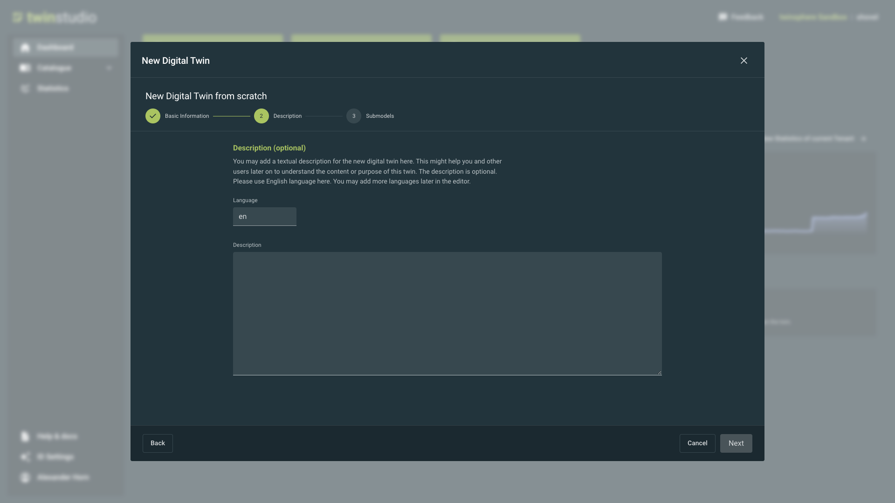
The description is optional. It helps you and others recognise the purpose of the twin later. Enter the English text here; more languages can be added in the editor.
Step 3: Submodels
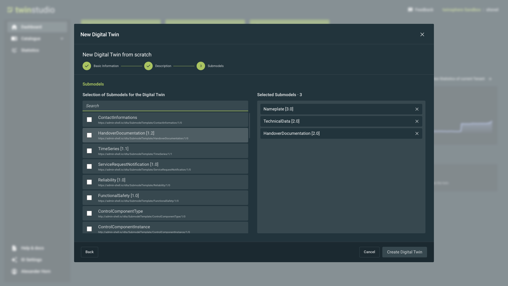
Select the submodel templates the new twin should start with. You can search the list, and the panel on the right shows the templates you have selected so far. If you select none, the twin is created empty and you can add submodels later in the editor. Each selected template is turned into a submodel instance, given a unique identifier and attached to the twin.
We recommend switching on the ID generator for submodels before creating
twins. Without it, every new submodel identifier is built by appending /sm/{ULID} to the identifier of the twin.
Select Create Digital Twin to finish. You land in the editor with the new twin open.
The editor
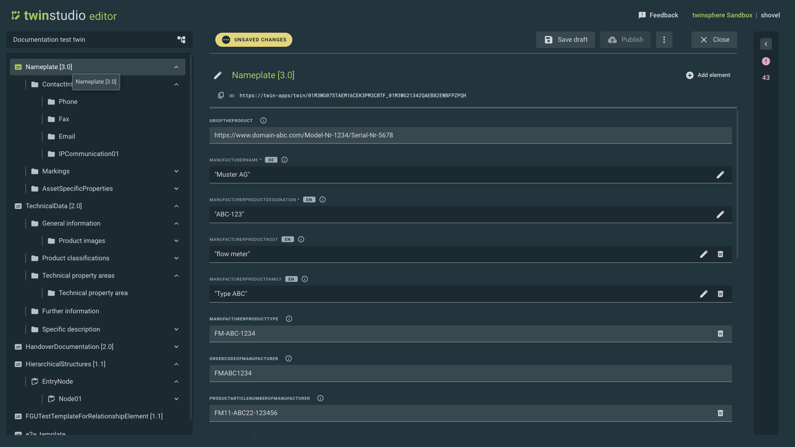
The toolbar
| Control | What it does |
|---|---|
| Published, Draft saved, Unsaved changes | The current save state of the twin |
| Opens the twin in the twinsphere Viewer. Only available for a published twin | |
| Save draft | Stores your work as a private draft |
| Publish | Writes the twin to your twinsphere tenant. Only available when the twin has no validation issues |
| More actions | Opens a menu with Export and Edit Submodels |
| Close | Leaves the editor |
The strip on the right edge shows the number of validation issues. Select it to open the issue list.
The navigation tree
The left-hand side lists the submodels of the twin. Expand a submodel to reach its elements. The icon in front of each submodel tells you whether twinstudio found the template of the submodel in your tenant:
- Template found. The editor validates the submodel and offers the elements the template defines.
- Template not found. You can still edit the existing values, but the editor cannot validate the submodel or tell you which elements are missing. To fix this, import the submodel template into your tenant.
Select Edit Submodels above the tree to add or remove submodels.
The form
The main area shows the element you selected in the tree, as a form. Which input is shown depends on the type of the element. Throughout twinstudio, required fields are flagged with an asterisk. If the template gives the element a definition, an information icon next to the name shows that definition when you hover over it.
If a saved draft exists for the twin you open, twinstudio asks which version you want to work on. Open Original loads the twin as it is stored in your repository. Open Draft continues your unpublished work. Opening the original and saving replaces the stored draft; the twin in the repository changes only when you publish.
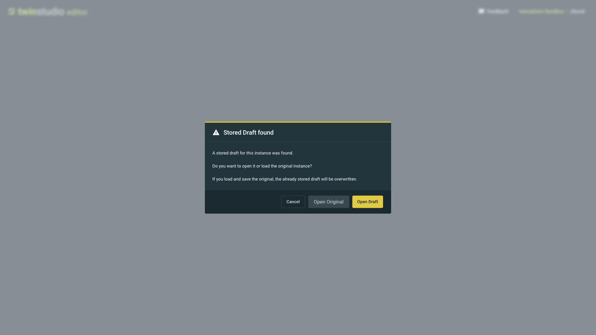
Shell metadata
The root of the tree is the shell itself. It holds the data that identifies the twin rather than the asset's data.

This data is protected because changing it carelessly can break references elsewhere. Select unlock to edit to make it editable and confirm the warning with Proceed. Select lock to protect to protect it again. twinstudio also locks the data again when you leave the editor.
| Field | Meaning |
|---|---|
| Asset kind | Type, Instance or Not applicable |
| Global Asset ID | The identifier of the physical asset. While unlocked, the button next to the field replaces the value with a newly generated ID that follows your asset ID pattern |
| Specific Asset ID | Further identifiers of the asset, such as a serial number or a customer key |
| Asset type | A reference to the type twin this instance is based on. A link is shown when it exists in the tenant |
| Description | A free-text description of the twin |
| Product image | A thumbnail shown in the catalogue |
| Version and Revision | The version of the twin and of the revision that produced it |
To add a specific asset ID, unlock the metadata, select Add element next to the name of the twin and choose Specific Asset ID. While the metadata is locked, this entry is disabled. Each specific asset ID has a name and a value.
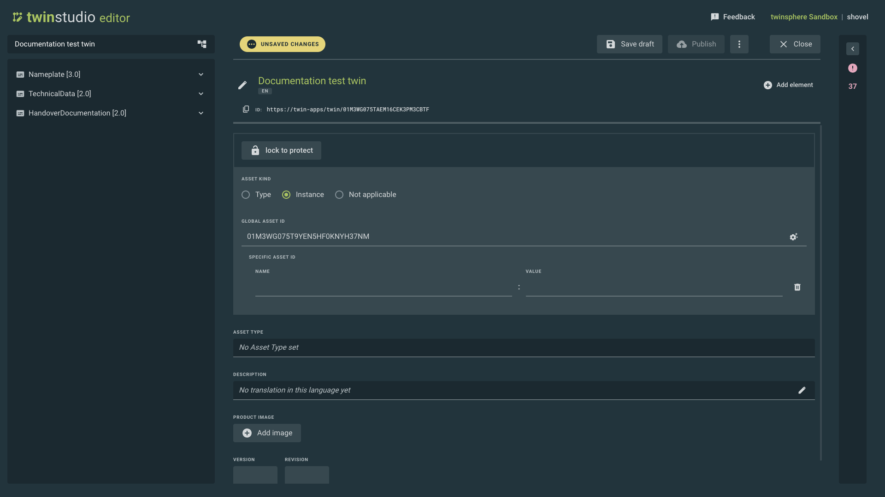
Adding and removing submodels
Select Edit Submodels above the navigation tree, or use the entry in the More actions menu.
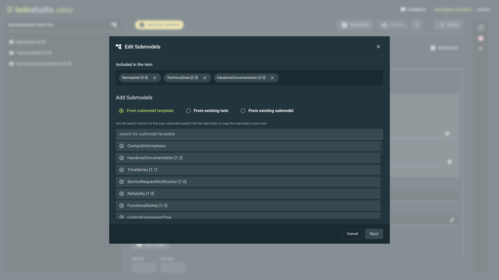
The top of the dialog lists the submodels the twin currently has. Select the cross on a submodel to mark it for removal. It is shown struck through, and the arrow next to it undoes the removal. Nothing is removed until you confirm the dialog.
You can create a new submodel from a submodel template, from an existing twin, or from an existing submodel.
| Source | What it does |
|---|---|
| From submodel template | Adds a new submodel based on a template from your tenant |
| From existing twin | Takes submodels from another twin, for example the nameplate of a similar product |
| From existing submodel | Adds one submodel from your repository, identified by its full ID |
Search for a twin by display name, global asset ID, idShort or AAS ID; enter at least 3 characters. Partial submodel IDs are not supported.
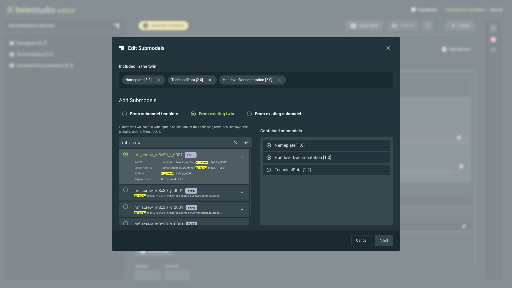
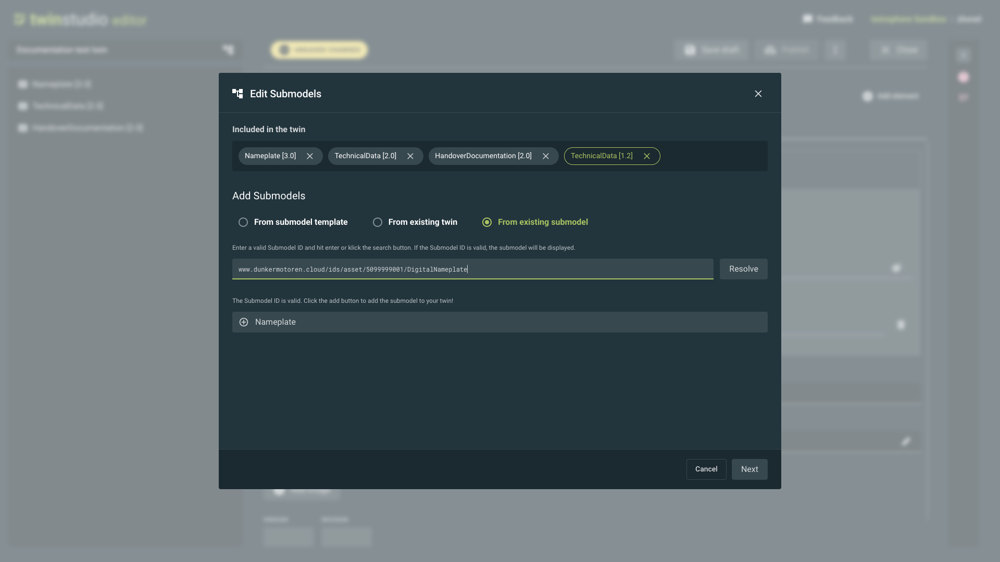
Submodels you have added appear highlighted in the list at the top. Select Next to review the changes, then Set to apply them. A submodel that comes from a template is always created as a new copy of the template. For every submodel you add from an existing twin or an existing submodel, you choose between two modes:
- copy - the submodel is duplicated with new identifiers and is fully independent afterwards.
- reference - the submodel is shared. Changes to it affect every twin that references it.
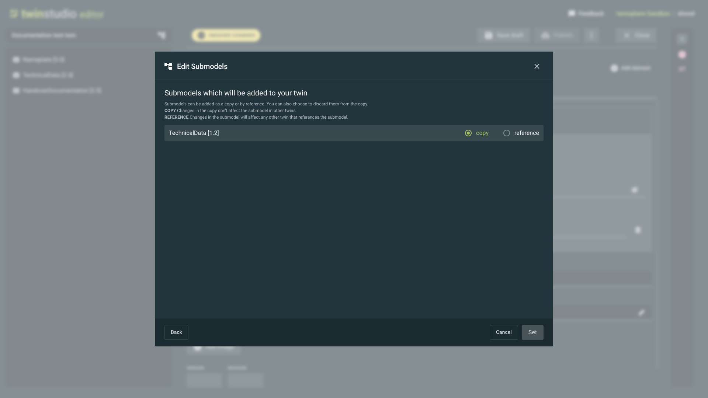
The same submodel can be added to a twin more than once.
Adding and removing elements
If the template of a submodel could be resolved, the editor knows which elements it allows and offers an Add element menu. The menu is grouped into two sections:
- Add to Tree Navigation adds a child node that also appears in the navigation tree. To remove it, open that node and delete it there.
- Add to Form Page adds a further field next to the existing ones. Each added field has its own delete button.
Entries that cannot be added, for example because the element already exists, are greyed out.
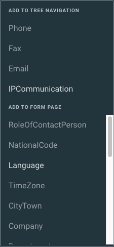
If the template specifies a cardinality of one, the last remaining element cannot be removed.
Custom elements
Some templates, for example Digital Nameplate 3.0 or Technical Data 2.0, allow additional elements that the template itself does not describe. These are called custom elements. In the Add element menu they appear as Custom Element. Choosing one opens the Create Custom Element dialog, which has three steps:
- Select Semantic - choose the meaning of the new element. The best option is to select a concept description from your tenant; the list shows the first 50 results, and you can search it by name. Alternatively, enter a characteristic reference such as an ECLASS ID. Set no meaning is possible but not recommended, because the element cannot be processed by a machine afterwards.
- Select Name - the name shown to users in the interface. Give the English name; use Add localisation to add further languages. Each name must be longer than one character, must not start with a number and must not contain line breaks or tabs. It can have at most 126 characters.
- Select Type - which values are allowed.
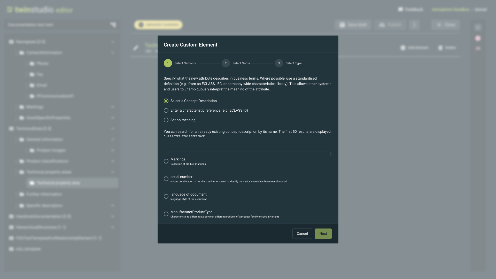
The dialog only offers the types the template allows.
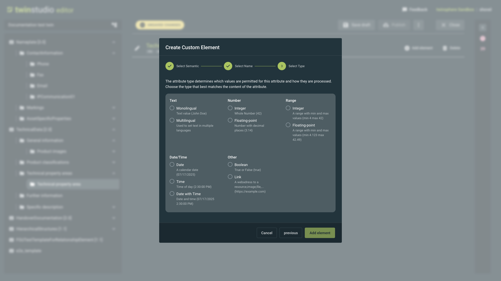
Filling in values
Every change is validated as you make it. The result appears in the issue list. Some messages appear only after you leave a field.
Properties
A property is shown as an input field.
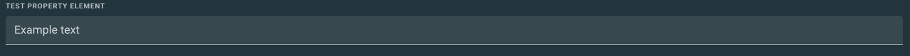
Make sure the value matches the data type of the property. The issue list reports a mismatch. A text field grows up to five lines and then scrolls.
If the submodel template defines a qualifier of type FormChoices, the allowed values are offered as a drop-down instead of a free text field.
If the template defines a unit for the property, the unit is shown next to the field.
Date, time and date with time
Properties with the value types xs:date, xs:time and xs:dateTime are filled in with dedicated controls instead of
a free-text field, which removes the need to know the ISO format.
Date
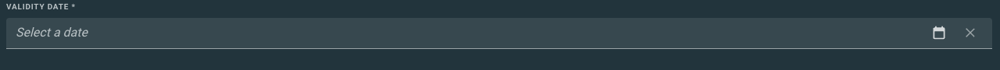
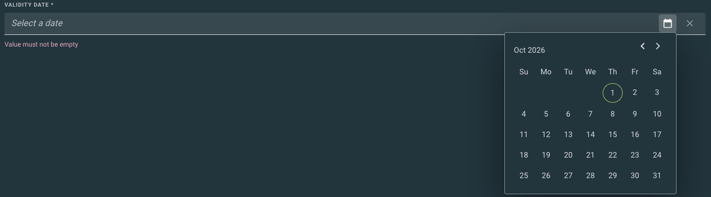
The value is shown in the date format of your browser language. In the calendar you can move between months with the arrows. Select the month and year at the top to choose a different year from a list. The cross clears the value.
Time
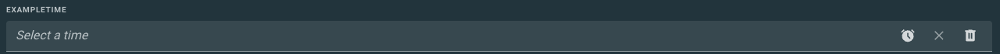
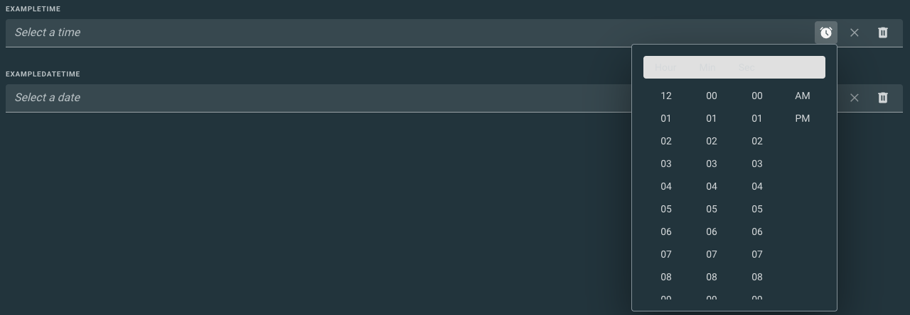
The value is shown in the time format of your browser language. The columns in the pop-up scroll, and hour, minute and second are selected separately. AM and PM are only offered if your locale uses them. The cross clears the value.
Date with time
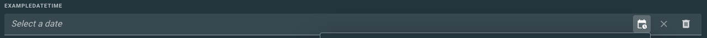
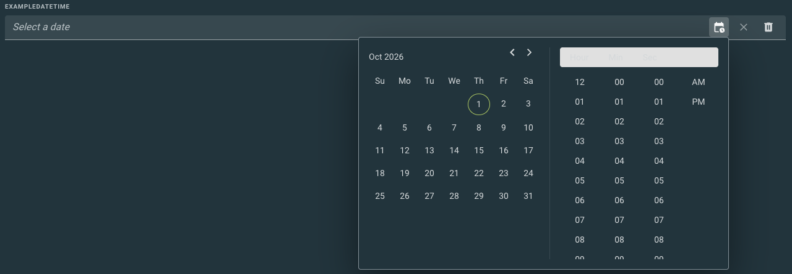
The pop-up combines the calendar and the time selection. The cross clears the value.
Multi-language properties
A multi-language property holds the same text in several languages.
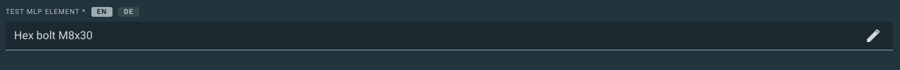
The languages that have a value are shown as tags next to the name of the field, and the field itself shows one of them. Which one is shown follows the same order as everywhere else in twinstudio: your data language first, then your interface language, then English, and finally the first language that has a value at all. Select a tag to display that language instead.
Select the pencil icon to open the editing dialog.
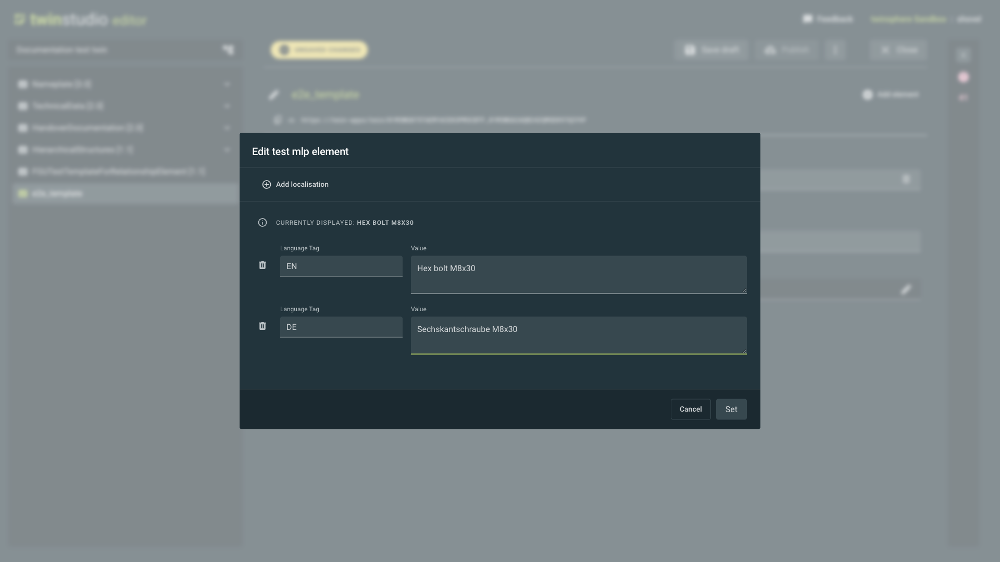
The dialog lists every language that has a value. Use Add localisation to add a language and the bin icon to delete one. A language may only be used once. Set applies your changes and is disabled while an input is invalid. The line Currently displayed shows which value is displayed after saving, and the information icon next to it lists the order described above.
Files
A file element points either to a file on your computer or to a file in the twinsphere file repository.
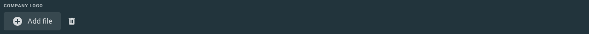
Select Add file to open the dialog and choose one of three sources:
- I want to upload a file stores the file in the file repository and writes a reference into the element.
- I want to add a link to an external file stores only the link as the value, so you can refer to files hosted elsewhere. The file is not uploaded to the file repository.
- I want to choose a file from twinsphere file repository selects a file that is already stored, instead of uploading it again.
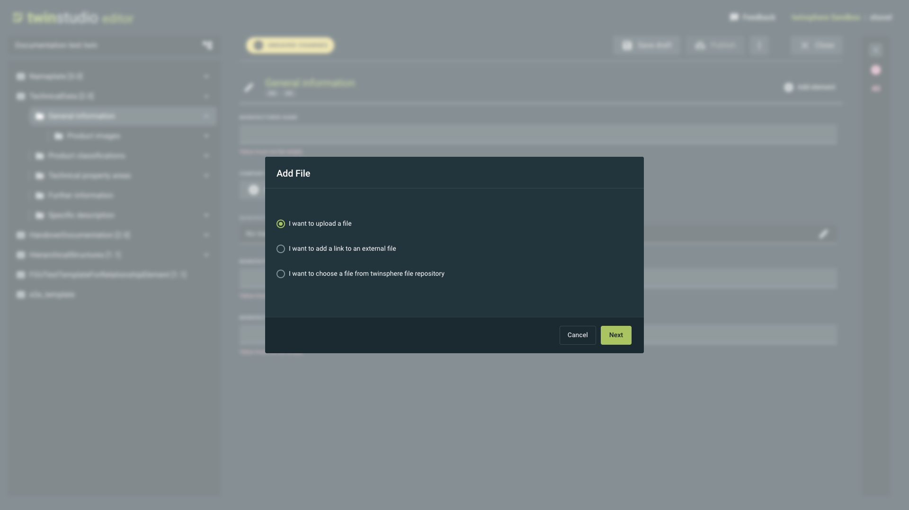
Once a file is set, a tag next to the name of the field shows its type, for example png. The tag reads URL for a
link to a file outside twinsphere. The field shows the link, and its tooltip shows the full value if it is cut off. The
icons at the end of the field download the file, clear the value, or delete the element. The delete icon is only shown
for elements that are optional or may occur more than once.
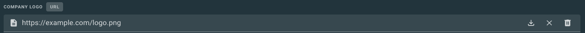
twinstudio stores the content type of the file with the element. If it cannot determine one, it uses
application/octet-stream.
Ranges
A range element has a minimum and a maximum.
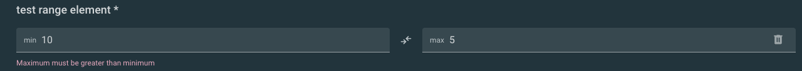
Note
The AAS specification marks the range element as experimental, so its definition may change.
If the template marks the element as mandatory, at least one of the two values has to be set. For numeric data types the editor reports an error if the maximum is smaller than the minimum.
If the template defines a unit for the range, the unit is shown next to the field.
References
A reference element points somewhere else. It can point to another element of an AAS (a model reference) or to something outside the AAS, such as an ECLASS entry (an external reference). See the AAS specification ⧉ for details.
Select Add Reference to open the Set Reference dialog, and then choose what kind of target you want:
| Type | Target |
|---|---|
| An element of the current Twin | Any element of the twin you have open, including the twin itself |
| An element of another Twin in the connected twinsphere tenant | A twin, submodel or element stored in the same tenant |
| An external element | Anything outside twinsphere, identified for example by an ECLASS identifier |
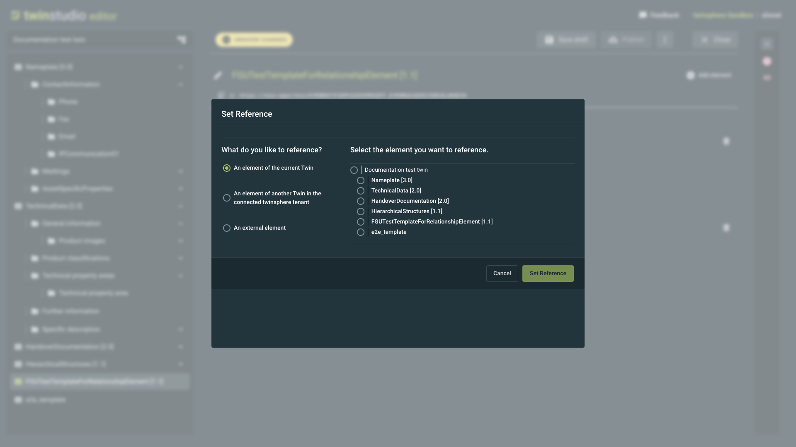
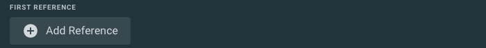
For the current twin, select the target in the tree and confirm with Set Reference.
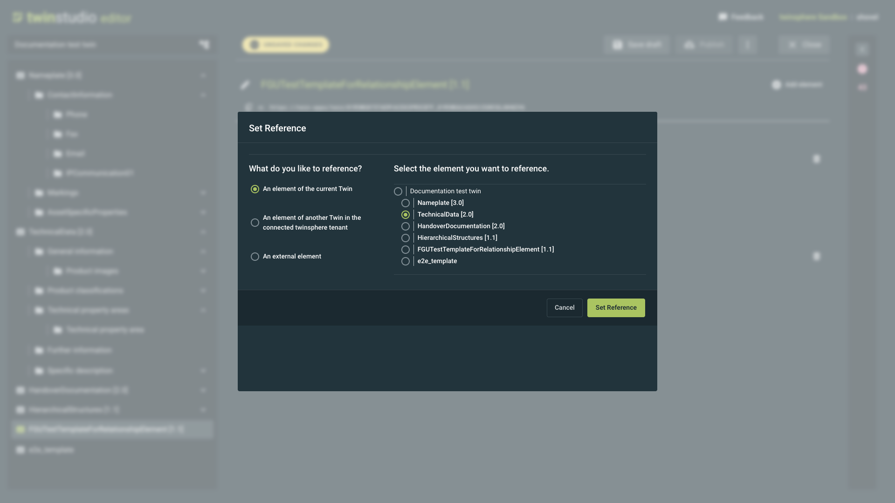
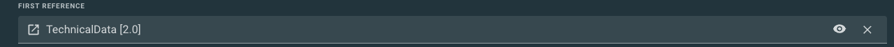
For a twin in twinsphere you first search for the twin. Enter at least 3 characters and press Enter. Select a twin from the list, confirm with Choose Twin, and then pick the submodel or element inside it. Back returns to the search.
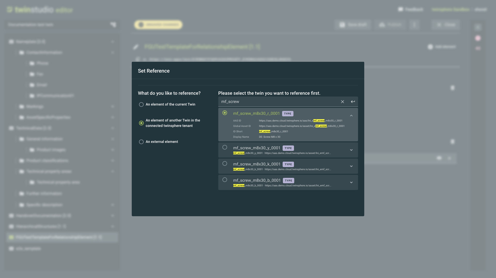
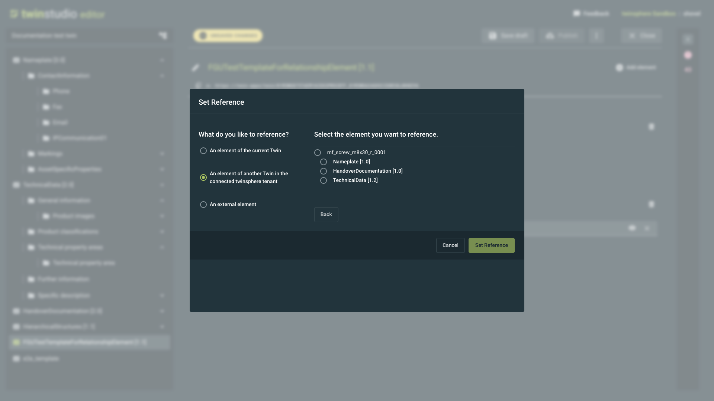
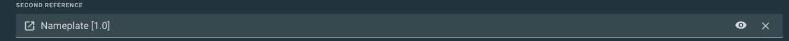
An external reference is typed into the input field.
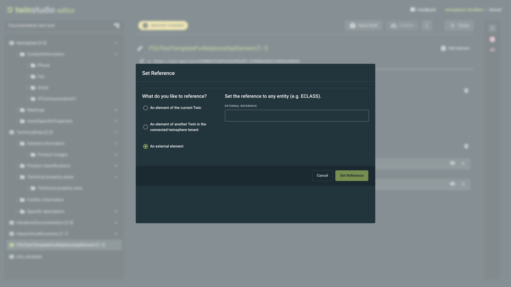
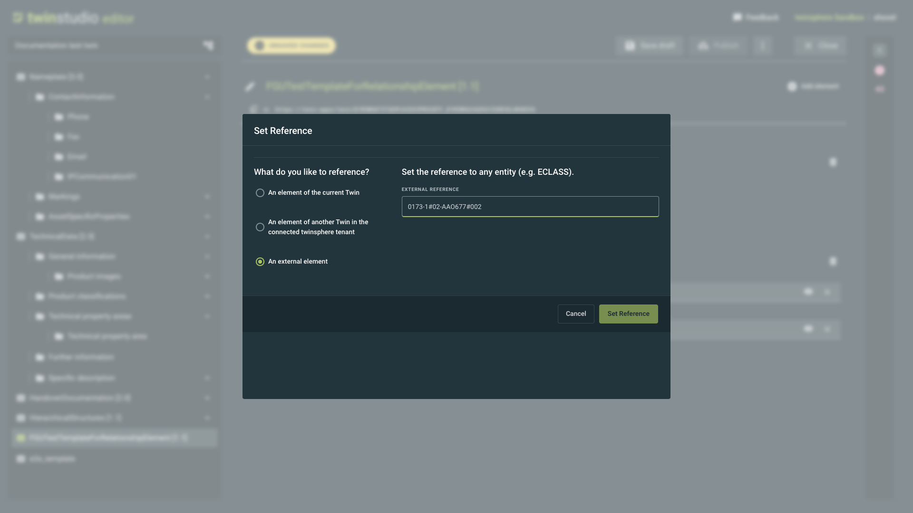
A filled reference shows a short summary with two icons. The eye icon opens Reference Details, which shows the full target. It is not available for external references. The cross removes the reference, after which you can set a new one.
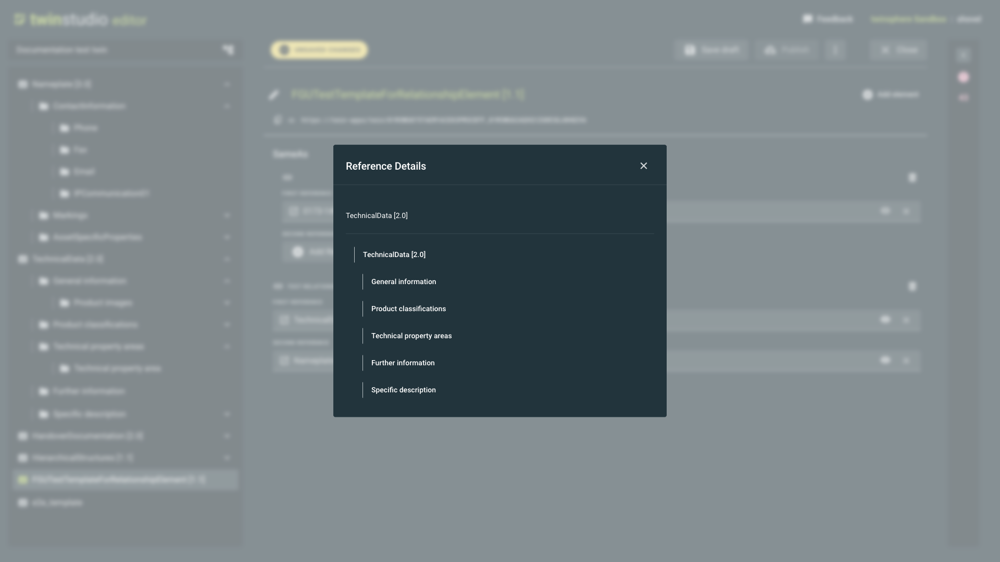
Entities
An entity element stands for an object that is described by further elements below it. An entity can reference an existing twin.
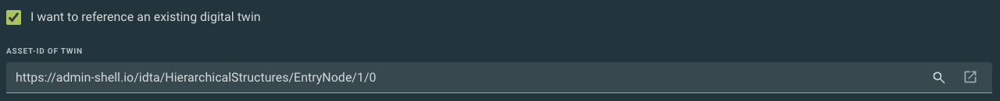
Tick I want to reference an existing digital twin and enter the Asset-ID of twin. If a twin with that asset ID exists in the connected tenant, the button at the end of the field becomes available and opens the twin in the AAS viewer. Otherwise it is disabled and its tooltip explains that the twin does not exist in the connected tenant.
The magnifying glass opens the Select existing Twin dialog. Enter at least 3 characters and press Enter. The dialog lists at most ten matches, and the search looks at the display name, the global asset ID, the idShort and the AAS ID. A twin without an asset ID cannot be referenced, and twinstudio tells you so.
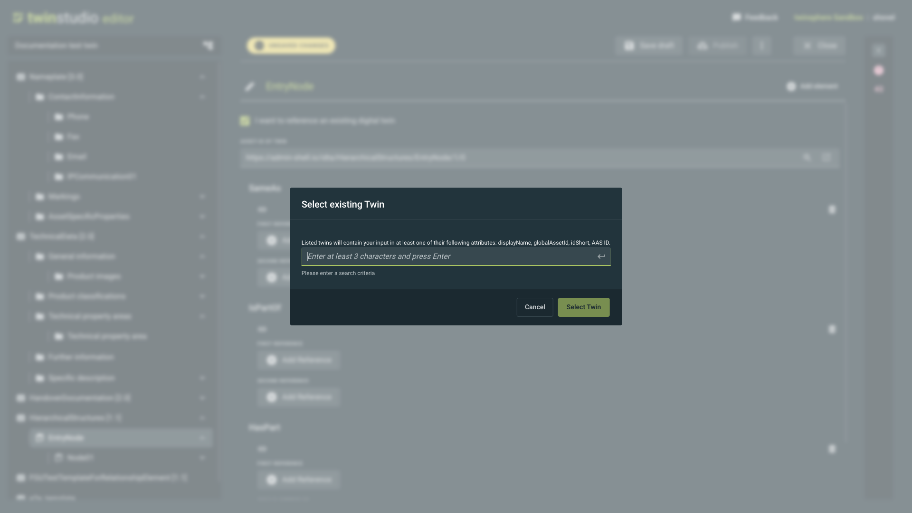
Relationship elements
A relationship element connects two references, called the First Reference and the Second Reference. Both are filled in exactly like a reference element.
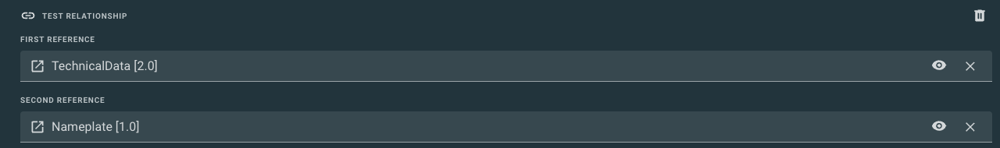
Validation issues
Every change triggers a validation of the twin.
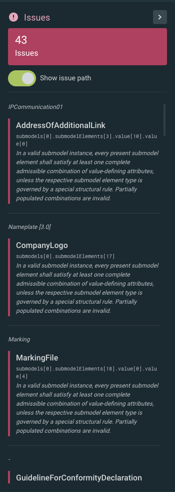
The number of issues is shown on the strip at the right edge of the editor. Select it to open the list, and select the arrow in the header of the list to collapse it again. Each entry shows the name of the element, the name of the submodel or element it belongs to above it, and a message that says what is wrong. The switch Show issue path adds the technical path of the element to every entry. Select an issue to jump to the element that caused it; the editor opens the element and shows the message at the field.
A twin with issues can be saved as a draft but not published.
Saving and publishing
Save draft
Save draft stores your work as a draft. A short message confirms it. Drafts are private: only you can see, edit or delete them, and they are listed in the draft catalogue.
Files that belong to a draft are stored with the draft and only uploaded to twinsphere when the twin is published.
Publish
Publish writes the twin to the twinsphere tenant. All validation issues must be resolved first; if any remain, the button is disabled and the tooltip points you to the issue list.
After a successful publish a dialog shows the ID, the name and the tenant the twin was written to. The draft it came from is deleted, and the twin is then listed under Digital Twins rather than Drafts. If the cloud rejects the twin, the dialog lists the errors, grouped by shell, submodels and concept descriptions.
Save state
The toolbar always shows the current state of the twin:
| State | Meaning |
|---|---|
| Unsaved changes | You have changed something since the last save or publish |
| Draft saved | The current work is stored as a draft |
| Published | The twin in the repository matches what you see. This is also the state right after opening a twin |
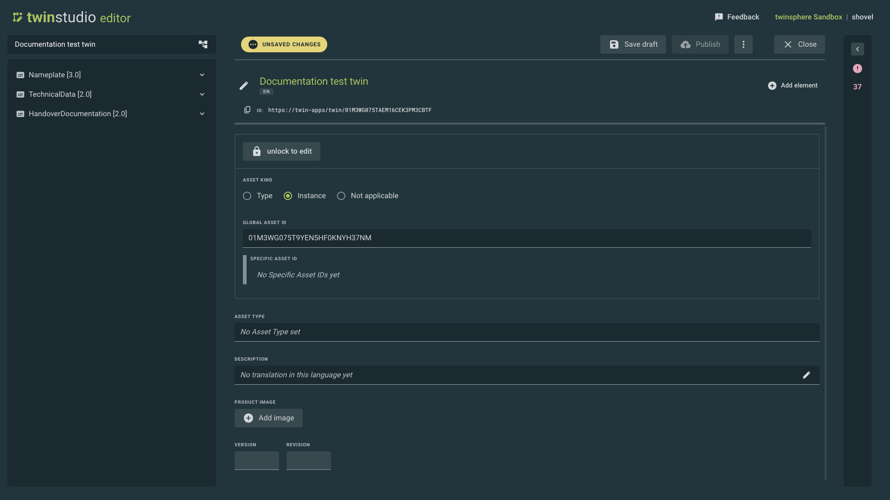
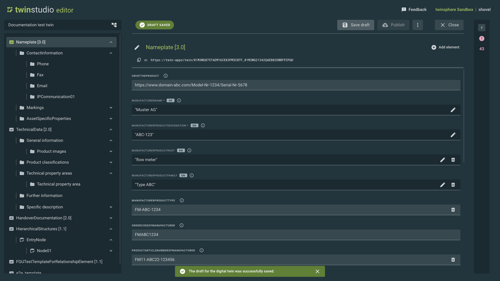
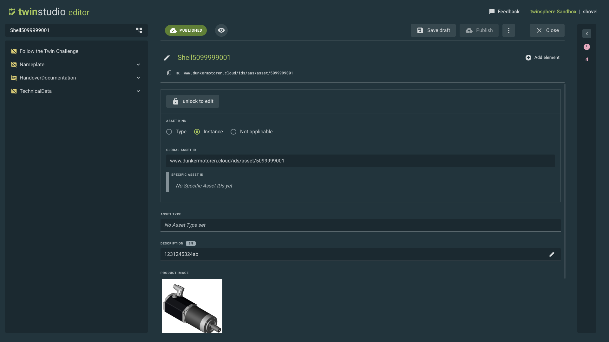
Closing with unsaved changes
If you close the editor with unsaved changes, twinstudio asks what should happen to them. Save and close stores them as a draft, Discard and close drops them, and Cancel keeps you in the editor.
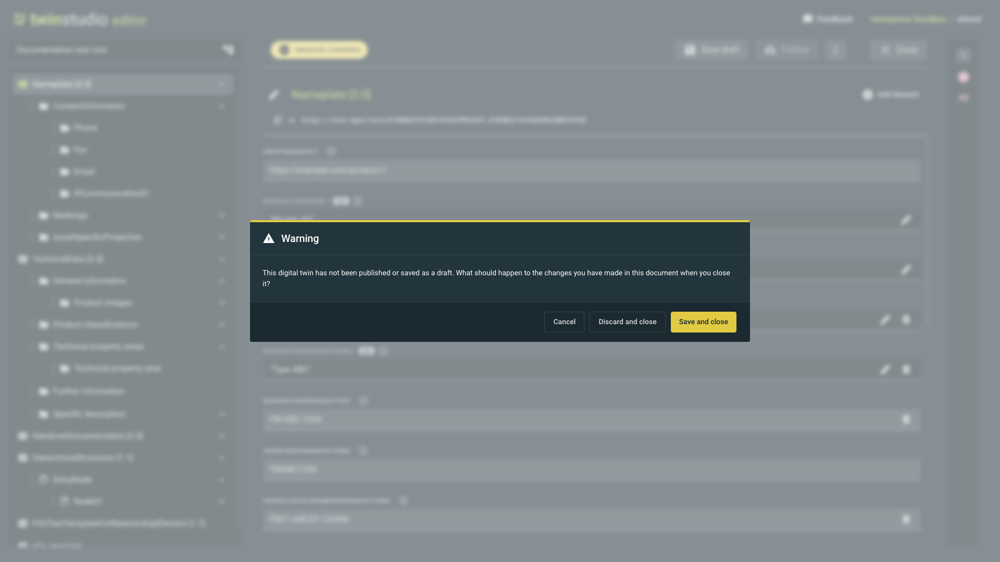
If your permission to edit was revoked while you were working, for example because a licence or a role was removed, the draft can no longer be saved. twinstudio tells you so with the message Draft cannot be saved instead of losing the changes silently.
Exporting a twin
Open More actions in the toolbar and select Export.
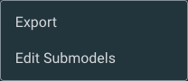
The export dialog lets you choose, in this order:
- Select where to export to: Clipboard or File.
- Select a format: JSON, XML or AASX.
- Select which submodels to include: all of them, or a selection.
- Whether to include Concept Descriptions.
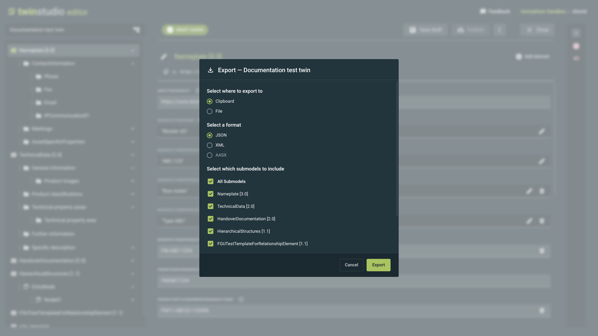
AASX is only available when the target is File and the twin is published and unchanged. The same holds for including concept descriptions: the option is available for published twins only. An invalid twin can still be exported, but twinstudio asks for confirmation first (Export Anyways).
Adding a document with the Document AI wizard
The Handover Documentation submodel requires every document to carry a classification according to VDI 2770 sheet 1. twinstudio provides an AI-based classification service for this. The Document AI wizard analyses a document and suggests its classification, title, keywords and description, so you do not have to enter them by hand.
Warning
The wizard only accepts PDF files, and it can only add documents to Handover Documentation submodels of version 2.0.
To start, select Add Document at the top of the Handover Documentation submodel.
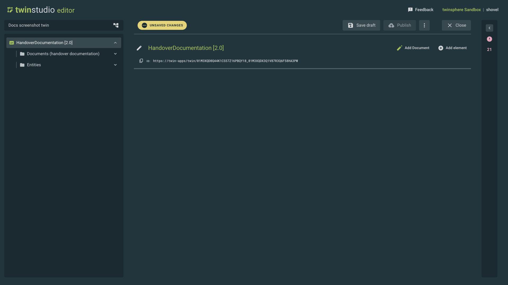
Drag a PDF file into the dialog or select the drop zone to choose one, then select Analyse.
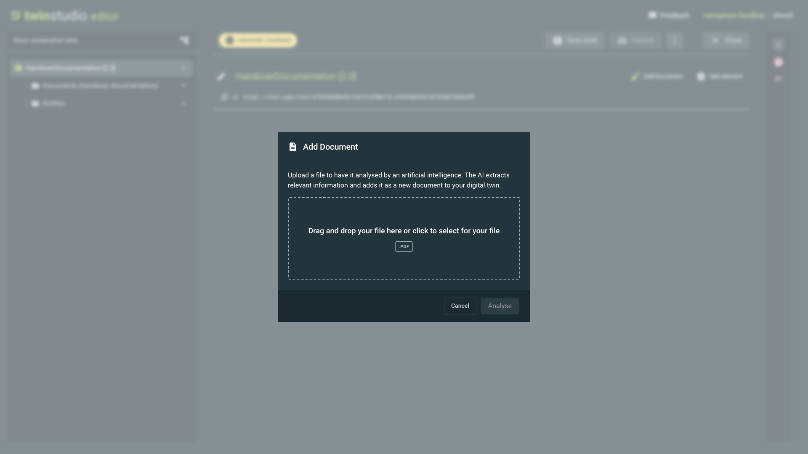
The dialog shows Analysis in progress until the result is ready.
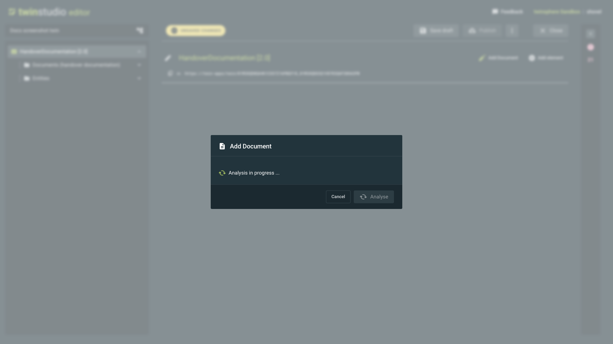
The wizard then shows the title, the keywords, the description and the classification it determined for the document. Each value carries a confidence in percent, so you can judge how reliable it is. The values cannot be edited in the dialog. Select Upload File to upload the PDF. The button then changes to Add element, which adds the document to the submodel. You can also cancel the process instead.
After the document has been added, the editor opens the new element so you can review it. Its name is the title the wizard determined.
Branding
Every twin and submodel you edit with twinstudio receives an extension that records the twinstudio branding with the version that wrote it.